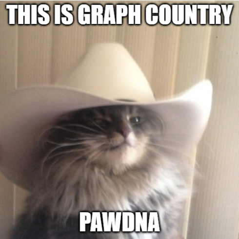
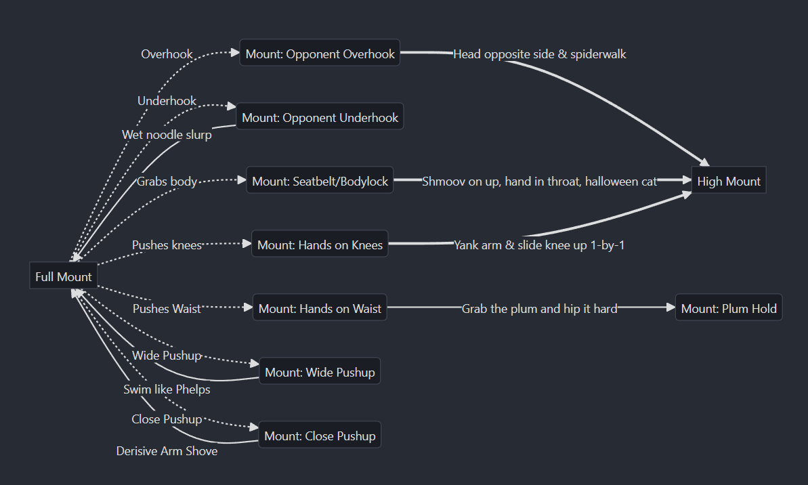
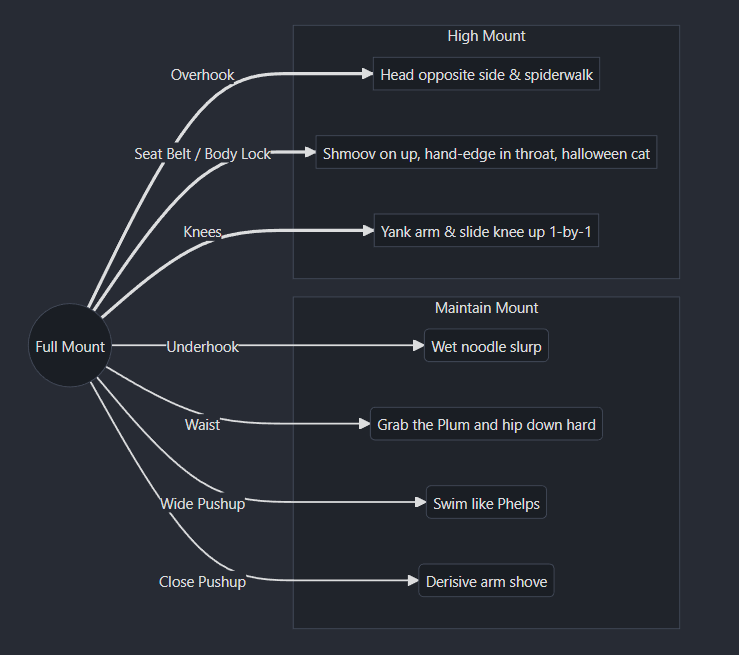
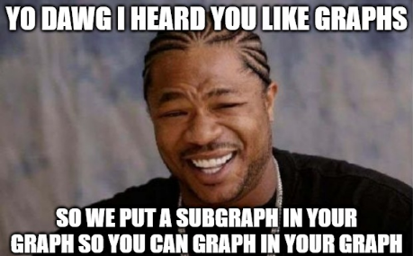
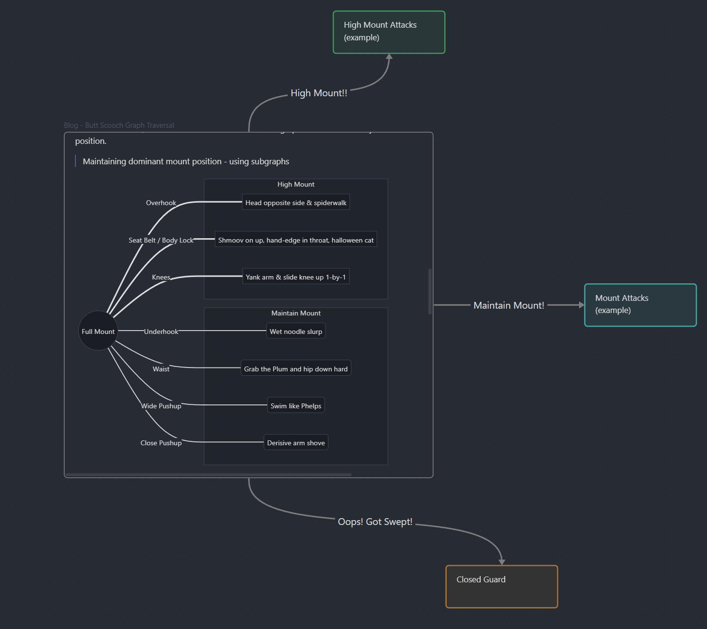
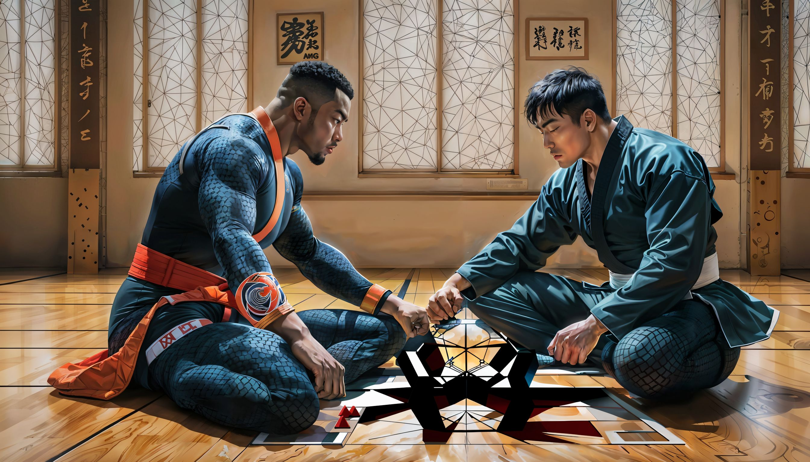

flowchart LR SMount((S-Mount)) -->|grab arm| ArmBar[Arm Bar]
Brazilian Jiu Jitsu concepts as graphs
BJJ
Graphs
Depth-first
SearchScooch
Everybody loves graphs – if you are not “everybody”, see sidebar ➡️ – and they seem an ideal data structure for representing concepts in Brazilian Jiu Jitsu (BJJ). I think of BJJ as a loose physical analogue to chess which has several graph-based explorers. While chess explorers use directed acyclic graphs, BJJ is more intuitively modeled as a cyclic graph due to state repetition. For example, one representation defines nodes as positions and edges as transitions/moves.

Can this representation aid our study of BJJ?
I explored a few approaches: Drawing them on a tablet, Draw.io flowcharts, using Obsidian notes with links as directed edges, Excalidraw, and others…, but failed to meet some desired criteria:
- Graphs have a portable definition - e.g. plaintext, not hand-drawn or proprietary format
- Easy to generate larger graphs from existing graphs
- Integrates into existing note-taking tool of choice (Obsidian)
Concepts as Graphs
It’s All… Connected
Humanity’s Last Breath - Passage
We can represent an arbitrary concept – such as Maintaining Full Mount or Triangle from De La Riva – as a Mermaid diagram inside of Obsidian. These discrete concepts can then act as new nodes within Obsidian’s built-in Canvas note to produce larger meta-graphs representing game plans, focus areas, etc…
In plaintext, this is written as
flowchart LR
SMount((S-Mount)) -->|grab arm| ArmBar[Arm Bar]
Trouble seeing figures?
Try “Dark Mode”: Toggle in the top right of the navbar
Graph Definitions: The Spaghetti Monster Cometh
I have found the truth and it is made of Pasta
COTFSM
As mentioned, an intuitive representation is a cyclic graph with nodes as positions and edges as moves/submissions/sweeps. Unfortunately, this more formal definition tends to obfuscate things. Below is an example of Maintaining Full Mount with two edge types: dotted edges represent opponent movements and solid edges represent responses.

This definition is more tedious to generate given the myriad of side-variations that stem from a given canonical position. Collapsing variations results in information loss and requiring each node define a specific position is messy.
Subgraphs and The Library of Babelerimbolos
The library will endure; it is the universe
The Library of Babel
Mermaid provides several different node/edge/arrow types which can be used along with an alternative definition to make the graph more concise. One approach is to use subgraphs, which allow us to nest subsections of the graph, resulting in a denser output with fewer edges.
In this example, opponent moves are now represented as edges and our reaction are denoted by a separate node shape (rounded square). These reactions are nested within a respective subgraph that denotes the terminal position of the sequence.

The other benefit of this approach is this graph now represents a potential modular component! A typical graph will likely have a left-most starting position and one or more possible terminal positions, such as our previous example with High Mount and Maintain Mount. But how are these separate graphs combined across Obsidian notes?

Obsidian’s Canvas allows any note to be inserted into a larger space which can then connect to other concepts into larger meta-graphs: representing anything from game plans to study areas. As more concepts are defined a “library” of ideas is built – each cleanly contained in their own note note, which when edited is conveniently propagated to any canvas referencing that note.
Below is a toy example where the previously defined subgraph previously defined is connected to some other possible concepts (which the author has lazily left undefined).

In addition to information retention – the goal of most note-taking – this approach should improve relating concepts learned at noncontiguous periods and assist in assembling systems that capitialize on curated experience.
Appendix
For now, what is important is not finding the answer, but looking for it
Gödel, Escher, Bach: An Eternal Golden Braid
Afterward
I had been interested in Jiu Jitsu since grad school when a guy on the UCSC Genome Browser team invited me to a trial class, but I was waaay too broke at the time to even consider it. Serendipitously, I moved last summer and on one of my runs I saw a BJJ gym was close by and convinced my wife to take a trial class. I was humbled by how difficult it was – and it hadn’t looked easy to begin with.
BJJ is hard for me: I’m stubborn and hold bad grips, I have poor breath control, my lower ribs enjoy dislocating, and I’m over 30 which is borderline ancient for a combat sport.
And yet… I really enjoy it. Aside from the challenge it forces me to prioritize my health and diet in order to train effectively. But most of my enjoyment stems from the generosity and kindness of the people I am fortunate enough to train with. I am grateful to them as this experience is a source of happiness in my life.
Acknowledgments
- Special thanks to Head Instructor Professor Jeremy Espiritu
- Thank you to Coach Carlos Contreras and the Noon Goons
- Love to my wonderful wife who puts up with my dubious choice of hobbies (please don’t be mad if I need my ear drained…)
Subgraph code
flowchart LR
subgraph M[Maintain Mount]
direction LR
Underhook(Wet noodle slurp)
Waist(Grab the Plum and hip down hard)
WidePush(Swim like Phelps)
ClosePush(Derisive arm shove)
end
subgraph HM[High Mount]
direction LR
Overhook[Head opposite side & spiderwalk]
SBBL[Shmoov on up, hand-edge in throat, halloween cat]
Knees[Yank arm & slide knee up 1-by-1]
end
FM((Full Mount)) ==> |Overhook| Overhook
FM --> |Underhook| Underhook
FM ==> |Seat Belt / Body Lock| SBBL
FM ==> |Knees| Knees
FM --> |Waist| Waist
FM --> |Wide Pushup| WidePush
FM --> |Close Pushup| ClosePushCover Photo

Copyright
John Vivian - 2023 - All Rights Reserved